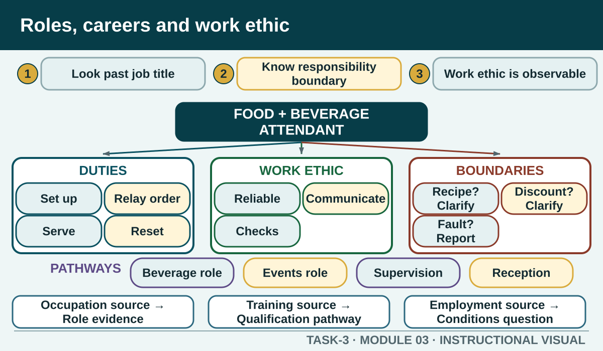

Prior learning
Recall the previous lesson and bring forward one question or completed learning artefact.
Task 3 · Lesson 3 of 6
Investigate hospitality roles through duties, conditions, pathways, work ethic and authoritative employment information without turning a career snapshot into personal or legal advice.
Prior learning
Recall the previous lesson and bring forward one question or completed learning artefact.
Success criteria
Learning boundary
This lesson supports preparation and formative practice. The current authorised package and trainer/assessor control formal products, observations, dates and submission.

A job title is a starting point, not a complete role description. The same title can involve different duties in a café, hotel, club, function venue or catering operation. Compare the products or services supported, customer contact, equipment or systems used, team relationships, supervision and decisions within the role.
Describe contribution using observable work. A service worker may prepare an area, provide information, record requests, coordinate with another work area and close down. A kitchen hand may support cleanliness, workflow and safe equipment handling. The aim is to understand how the role contributes to the service system, not to make one role sound more important than another.
General responsibilities can include accurate communication, safe and ethical conduct, customer service, product knowledge, teamwork, record keeping and care of work areas. Exact duties and authority depend on the workplace, training and current direction. Research should therefore separate common role patterns from local instructions.
A reliable worker does not hide uncertainty or improvise an unauthorised decision. They identify what they can do, what information they need and when to seek help. This is especially important for compliance, customer data, payments, complaints, hazards and service changes.
Work ethic is not a vague claim that someone is a good worker. It can be evidenced through punctual preparation, reliability, honest communication, care for quality, respectful teamwork, appropriate initiative, willingness to learn, response to feedback and completion of agreed duties. The behaviour needs a context and an effect.
Strong initiative stays within authority. It might mean noticing missing information, preparing the next approved task or asking a useful question. It does not mean bypassing a safety step, changing a system without approval or concealing an error to appear capable.
Hospitality careers can move across roles, sectors and levels of responsibility. A pathway may build technical skill, broaden customer or operational experience, add training or move into supervision. People can also transfer skills such as communication, scheduling, customer service and teamwork into related industries.
A useful pathway snapshot compares the entry context, general duties, training information, working conditions, transferable skills and next learning step. It should not promise a promotion, wage or vacancy. Use current official occupation and training sources, then check employer information for the specific role.
Different sources answer different career questions. Training.gov.au describes nationally recognised units and qualifications. Jobs and Skills Australia provides occupation and industry profiles. Fair Work information helps users find awards and understand that coverage depends on the business and classification. An employer provides the actual position description and local expectations.
A job advertisement can show what one employer is seeking at one time, but it does not establish industry-wide duties or legal minimums. A social post can offer personal experience, but it should not be used as proof of pay, entitlement or required training. If an employment question affects a real person, use the current official tools or appropriate advice rather than a classroom inference.
Career information should recognise that recruitment, training and progression decisions need to be based on relevant requirements rather than stereotypes about age, disability, culture, sex or another personal characteristic. Official human-rights and employment sources can provide plain-English guidance, while the exact legal position depends on the circumstances and jurisdiction.
In a role comparison, focus on the inherent duties, skills, safe performance and support or adjustment process described by authorised sources. Do not decide whether a real person can perform a role or diagnose a workplace dispute. The appropriate learning action is to identify respectful behaviour, reliable sources and the route for clarification or support.

External media loads only after you choose it.
Source-linked video
Watch for: Record the different entry points, transferable behaviours and ways the speakers say their careers developed.
Formative practice
Each option explains the workplace consequence. These responses save on this device.
Written application
Use general, source-supported role information. Do not invent pay, vacancies, a promotion promise, a local position description or advice for a real person's employment situation.
Apply and keep evidence
Compare authority, currency, relevance and evidence before using hospitality information at work.
Use the check result, activity record and written response as formative learning evidence only. Formal evidence remains controlled by the current package and trainer/assessor.
Authorised source note: Career opportunities, general role responsibilities, work ethic, industrial-relations concepts and equal employment opportunity are source-supported knowledge domains. No pay rate, award coverage, vacancy, pathway guarantee or individual legal conclusion is supplied. Source references: TAS-2026-2027, TEACHER-T3-RESOURCE, SITE-T3-V2, TGA-SITHIND006, TGA-SITHIND006-AR, GOV-JSA-INDUSTRY, GOV-FAIRWORK-AWARDS, GOV-AHRC-WORKPLACE.